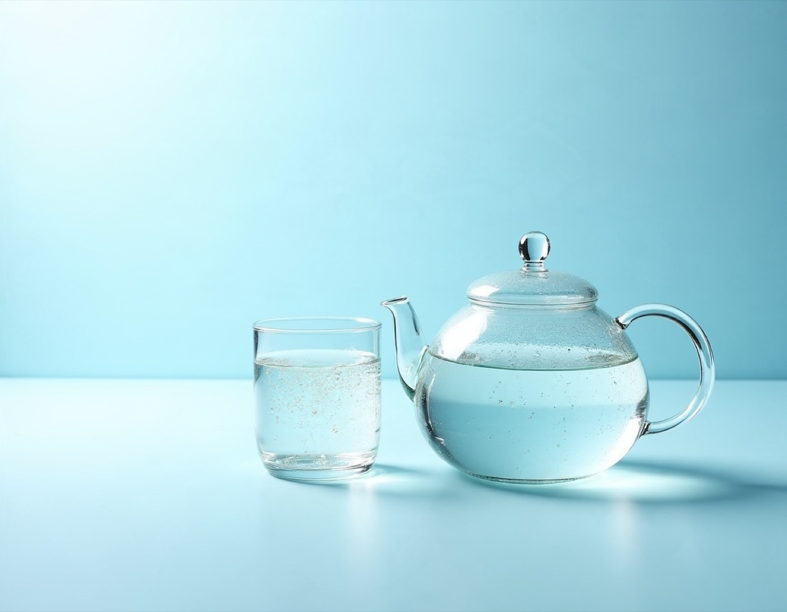

붓기 · 순환
부종환 엔오
붓기와 순환을 위한 처방
붓기와 다리의 당김·뭉침 같은 불편감을 관리하기 위한 한약 처방입니다. 전통 처방인 당귀작약산을 기본으로 하되 약재 비율을 달리하고 산화질소(NO)를 함께 구성했습니다.
- 10일 체험분 30포
- 1개월분 90포
- 저녁 늦은 복용 주의

COMPOSITION
구성
'서근이수(舒筋利水)', 즉 근육과 인대를 풀고 수분 배출을 돕는다는 한의학적 치료 원칙에 기반한 처방입니다.
- 당귀
- 작약
- 창출
- 복령
- 택사
- 오약
- 현호색
- 산화질소(NO)
당귀·작약·창출·복령·택사가 기본 구성이며, 오약과 현호색, 산화질소(NO)를 더했습니다.
FOR YOU
이런 경우 상담해 보세요
- 오래 서 있거나 앉아서 일하다 보면 다리가 붓는 경우
- 종아리가 당기고 뭉치거나 다리가 저린 느낌이 있는 경우
- 얼굴이나 몸이 자주 붓는 경우, 산후 붓기 관리가 필요한 경우
- 식이 조절과 함께 붓기와 컨디션 관리를 하고 싶은 경우(식욕을 억제하는 처방은 아닙니다)
HOW TO
복용 안내
- 하루 3회 복용을 기준으로 1개월분은 90포입니다.
- 처음에는 10일 체험분(30포)으로 복용감과 변화를 살펴볼 수 있습니다.
PRICE
소비자가격
10일 체험분60,000원30포
1개월분150,000원90포
※ 소비자가격이며 변동될 수 있습니다. 복용량과 기간은 진찰 후 정해 드립니다.
※ 치료 효과와 경과는 개인에 따라 다를 수 있습니다. 이 페이지는 일반적인 안내이며, 실제 치료는 진찰 후 개인별로 안내드립니다.
FAQ
부종환 엔오 관련 질문
부종환 엔오 가격은 얼마인가요?
소비자가격 기준으로 10일 체험분 60,000원, 1개월분 150,000원입니다. 가격은 변동될 수 있어 방문 전 확인을 권해 드립니다.
치료 효과는 얼마나 기대할 수 있나요?
증상과 경과는 사람마다 다르므로 특정 효과를 약속드릴 수 없습니다. 진찰 후 예상되는 치료 방향과 기간, 생활 관리법을 설명드립니다.
엔오(NO)가 들어간 처방은 누구나 복용할 수 있나요?
체질과 상태, 복용 중인 약에 따라 맞지 않을 수 있습니다. 임신·수유 중이거나 다른 약을 복용 중이시면 진찰 시 꼭 알려 주세요.
궁금한 점은 편하게 문의해 주세요
진찰 후 상태에 맞는 방법을 설명드립니다.